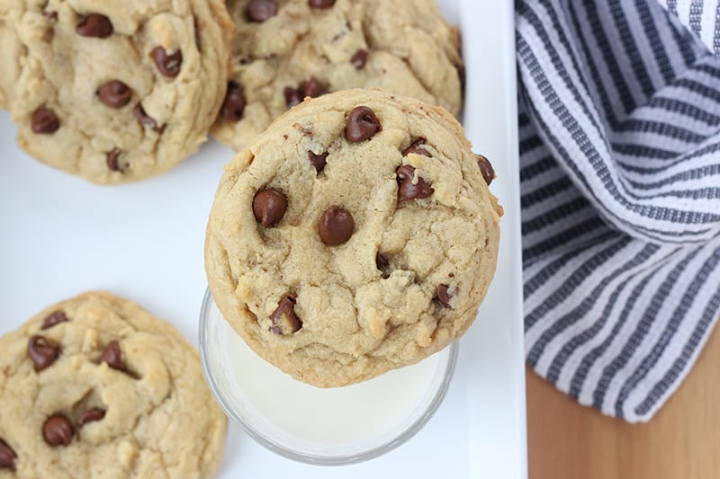

Kyle's World Famous Cookies

Description:
These cookies are special. They are not made with just traditional all purpose flour. Instead, we combine the
best part about cake and the best part about cookies. We use cake flour to give the cookie a nice, chewy and fluffy
inside. These will be the best cookies you have ever made.
Ingredients:
- 1 Cup Unsalted Butter
- 1 Cup Brown Sugar
- 1/2 Cup White Sugar
- Pinch of Salt
- Splash of Vanilla Extract
- 2 Eggs
- 1 1/2 Cup All Purpose Flour
- 1 1/2 Cup Cake Flour
- 3/4 Teaspoon Baking Soda
- 1 Teaspoon Cornstarch
- 1lb Chocolate Chips (Semi-Sweet or Dark)
Steps:
- Preheat your oven to 410 degrees fahrenheit
- Add your butter, brown sugar, white sugar in a big bowl
- Fold these ingredients together until they are completely mixed
- Add your eggs and vanilla extract to this mixture and mix until completely combined
- In a separate medium sized bowl, add your all purpose flour, cake flour, baking soda, cornstarch and salt.
- Mix together until well combined
- Slowly add in your dry ingredients into the wet ingredients bowl
- Fold these together very well until all your ingredients are completely are mixed together
- Add your chocolate chips to the bowl and mix together until they are evenly spread throughout the mixture
- Finally, roll the dough into balls and place on the baking sheet at least two inches apart
- Bake for 9-11 minutes and repeat until all your dough is gone
- Enjoy!
Return Home